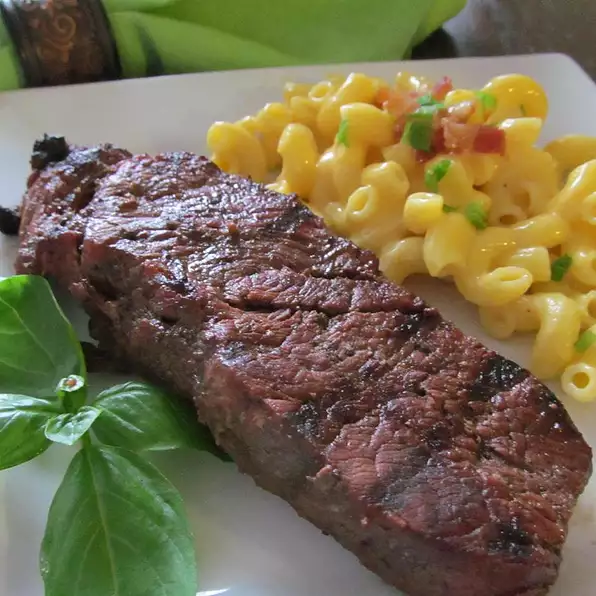

Home
Steak

Description
A quick and easy way to make a tasty, tender steak on the grill! Marinate for a minimum of 2 hours.
Ingredients
- ½ cup extra virgin olive oil
- ½ cup Worcestershire sauce
- ¼ cup minced garlic
- ¼ cup steak seasoning
- 1 tablespoon red wine vinegar
- ½ teaspoon dried basil
- ½ teaspoon Italian seasoning
- 4 (½ pound) New York strip steaks
Steps
- In a bowl, mix the olive oil, Worcestershire sauce, garlic, steak seasoning,
red wine vinegar, basil, and Italian seasoning. Pour into a large resealable
plastic bag. Pierce steaks on all sides with a fork, and place in the bag.
Gently shake to coat. Seal bag and marinate steaks a minimum of 2 hours in the refrigerator.
- Preheat grill for high heat.
- Lightly oil the grill grate. Discard marinade. Place steaks on the grill,
and cook 7 minutes on each side, or to desired doneness.